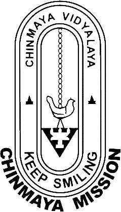

Values from Vedas
The Vedas are a large body of religious texts originating in ancient India. Composed in Vedic Sanskrit, the texts constitute the oldest layer of Sanskrit literature and the oldest scriptures of Hinduism. The values from vedas are - Satya, Dharma, Prema, Ahimsa and Shanti.
.jpg)
Value No.1 : Satya
Value No.2 : Dharma
Value No.3 : Ahimsa
Value No.4 : Shanthi
Value No.5 : Prema
OUR GURUS
Chinmaya Mission follows the Vedic teacher-student tradition (guru-shishya parampara) and makes available the ageless wisdom of Advaita Vedanta, the knowledge of universal oneness, providing the tools to realize the wisdom in one’s life.
Chinmaya Mission's emblem comprises the lamp of knowledge with the hamsa bird of wisdom at its crown, both denoting the Mission's spiritual and social services to the world. The purpose of the Mission's Vedantic teachings is to help seekers learn ethical values and cultivate a discriminating power - learn the art of distinguishing the changeless, infinite Substratum from the changing, finite world.

Chinmayananda learnt these values from his guru Tapovan Maharaj. He shared his good deeds that he had learnt from his guru to us. We students are proud to have a guru like Chinmayananda and a mission like Chinmaya Mission.
Click here
Thanks for visiting us! Hope this site helped you at least to some extent!
Keep Supporting Us